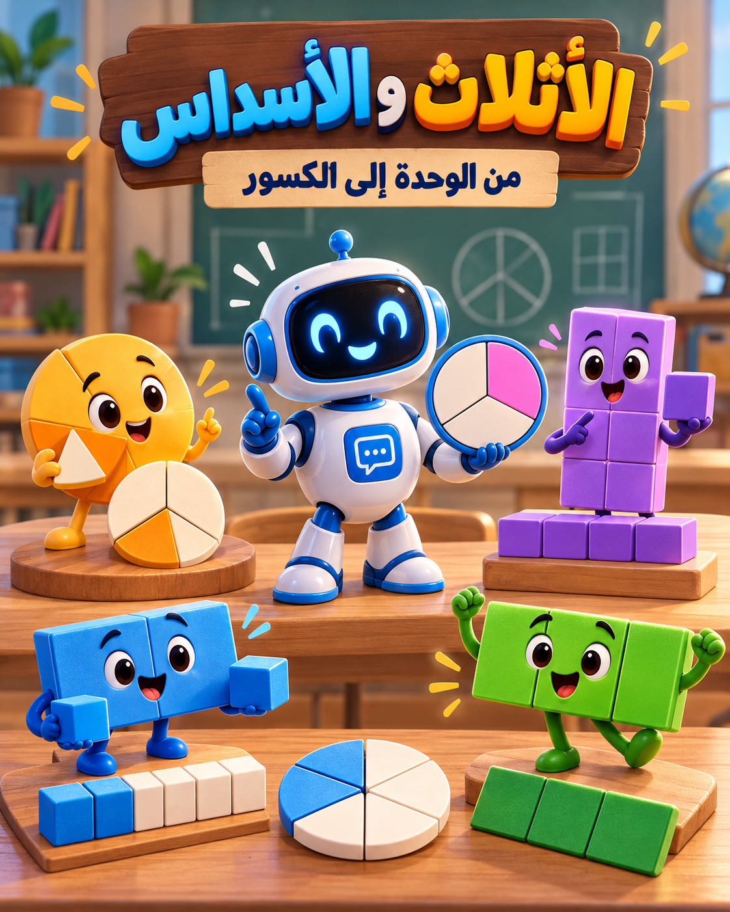
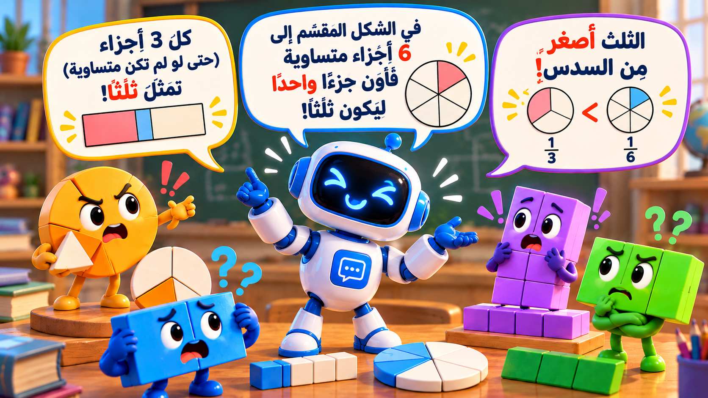
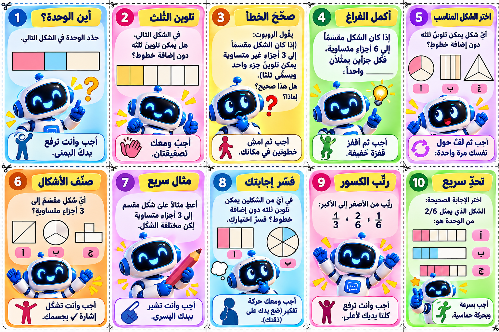
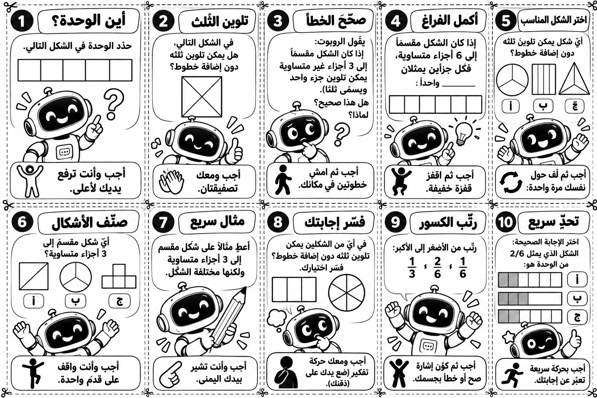
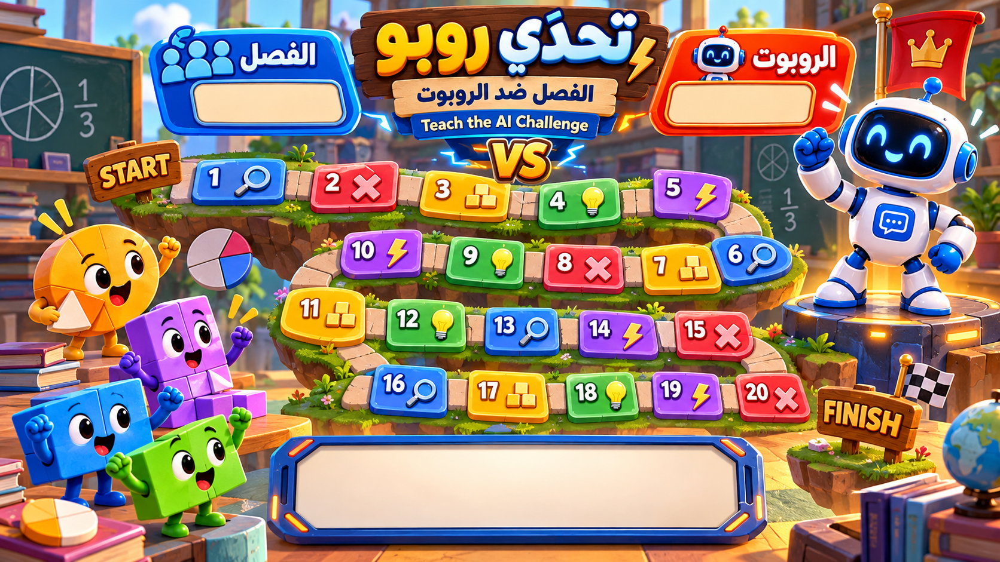

الوحدة هي الكل، والثلث والسدس أجزاء متساوية منها. إنفوجرافيك، فيلم الروبوت، بطاقات خروج ولعبة تحدّي روبو للفصل.


فيلم كرتوني قصير (36 ثانية) من ستة مشاهد: الروبوت يقول ثلاثة أخطاء عن الأثلاث والأسداس، والشخصيات تصحّح له. في النهاية يسأل الطلاب: هل تستطيعون تعليم الروبوت؟
20 بطاقة تحدٍّ عن الوحدة والأثلاث والأسداس يلعبها الصف كله معًا على الشاشة، مع نقاط للفصل وللروبوت.



الفكرة الرياضية، سير الدرس، أسئلة التحدّي، الأخطاء المتوقعة وبطاقة الخروج
صورة عالية الدقة لعشر بطاقات
نسخة موفّرة للحبر للطباعة والقص
مسار 20 محطة، الفصل ضد الروبوت
36 ثانية — للعرض في الصف